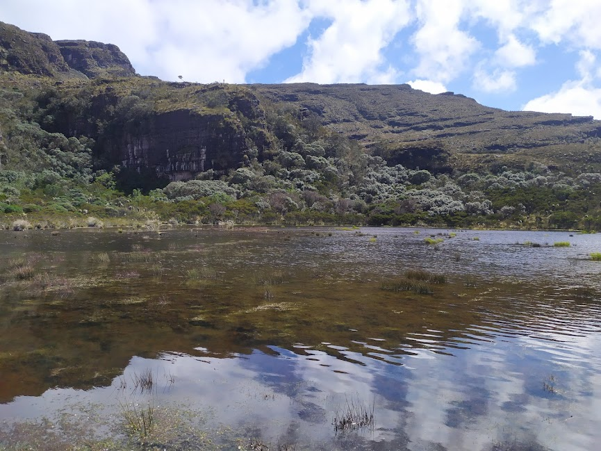
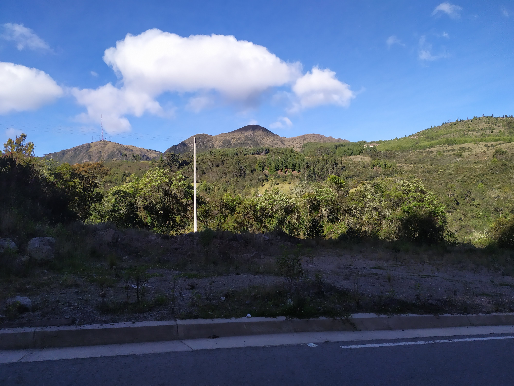
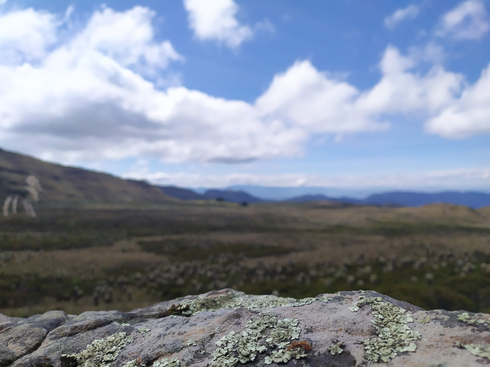
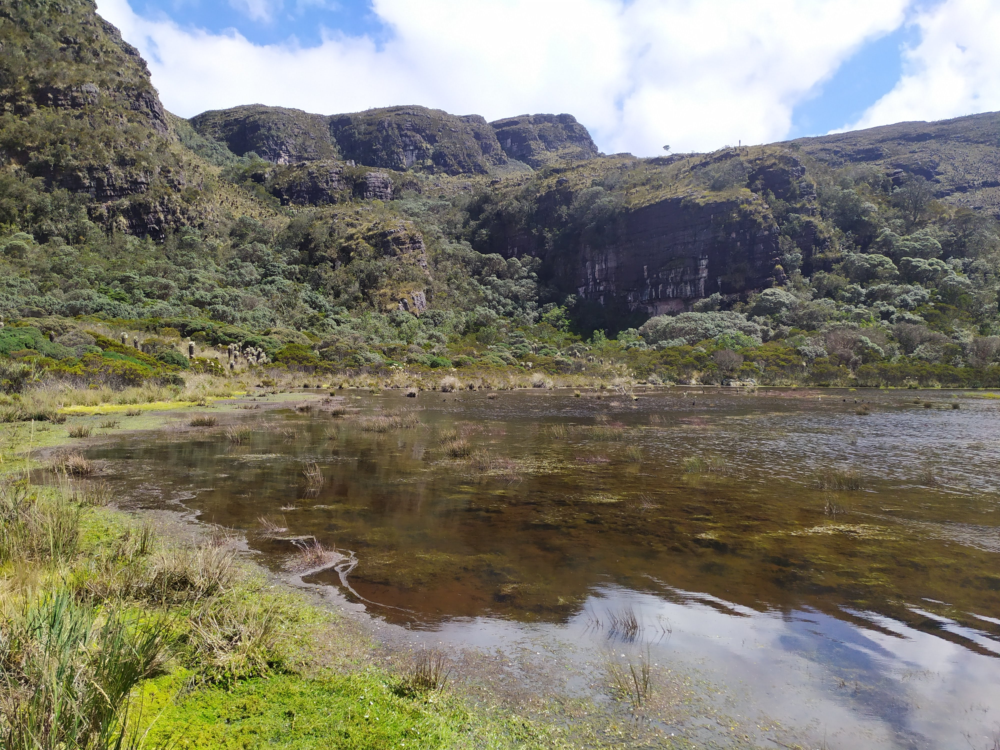

El páramo es un lugar ideal para el turismo ecológico, y las actividades deportivas como el senderismo y el ciclo montañismo. Así mismo podemos encontrar actividades económicas como la agricultura y ganadería a pequeña escala.
Respecto al turismo ecológico este se puede realizar debido a la belleza del páramo
y su riqueza hídrica. ¿Cómo así? Bien, el páramo tiene muchos, pero muuuchos cuerpos
de agua, explicando también la importancia de su conservación (…).
Podemos encontrar ríos (El río surba, por ejemplo), nacimientos de agua,
quebradas, y varias lagunas de gran tamaño distribuidas en la parte alta
de la montaña (más información sobre el turismo ecológico aquí).
Las que a mi más me gustan (y por supuesto recomiendo visitar) son
las Lagunas Encantadas (Puedes visitar su sitio
aquí). Estas
tienen una buena profundidad y pureza del agua increíbles.

Lagunas encantadas | Imagen Propia
Por otro lado, respecto a las actividades deportivas es muy común ver ciclistas y senderistas por el páramo, los cuales generalmente van a visitar las lagunas, y comer arepa en una tienda llamada Fabrica de arepas Buenos aires (Su sitio aquí). Personalmente he hecho varias veces los recorridos del páramo, así que a continuación les comparto varias rutas por si alguna vez vienen aquí:
|
Disponible para caminar o en bicicleta. Observación: A las 10 Am baja un bus hacia Duitama. Usualmente esta ruta dura de 2h a 3h. |

Finalización Ruta 1 | Imagen Propia |
|---|---|
|
|
Disponible para caminar o en bicicleta. Observación: A las 10 Am baja un bus hacia Duitama. Usualmente esta ruta dura de 3h a 4h. |

Finalización Ruta 2 | Imagen Propia |
|---|---|
|
|
Disponible para caminar o en bicicleta. Observación: Usualmente esta ruta dura de 6h a 7h. Es importante tener una buena condición física, pues hay partes donde el paramo es muy alto, y se puede sentir sensación de ahogamiento. |

Finalización Ruta 3 | Imagen Propia |
|---|---|
|